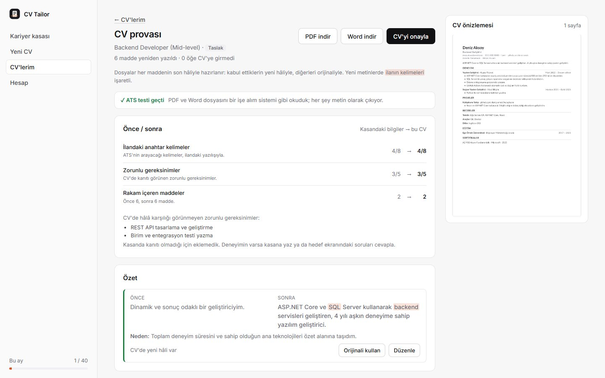
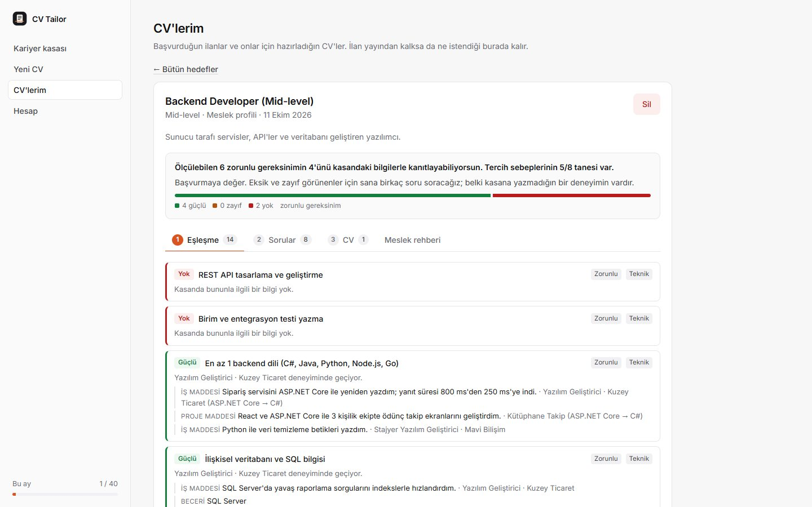

ATS testi
İndireceğin PDF ve Word dosyası, bir işe alım sistemi gibi geri okunuyor: adın, iletişim bilgilerin, bölüm başlıkları ve her madde tek tek aranıyor.
İlana göre CV hazırlama
CV'ni yükle, ilanı yapıştır. İlanın istediklerini deneyimlerinle eşleştirir, eksik kalanları sana sorar, maddeleri ilana göre yeniden yazar ve her değişikliğin nedenini söyler. Sonuç işe alım sistemlerinin sorunsuz okuduğu bir PDF ya da Word dosyası.
Ayda 40 AI işlemi ücretsiz. Kart bilgisi istemiyoruz.

Yeni yazılan her madde dayandığı bilgiyi gösteriyor. AI'ın yazdığına güvenmiyoruz; her madde kasandaki kaynağıyla karşılaştırılıyor:
Birine takılan madde kırmızıyla işaretleniyor ve sen onaylamazsan CV'ye orijinali giriyor.

İndireceğin PDF ve Word dosyası, bir işe alım sistemi gibi geri okunuyor: adın, iletişim bilgilerin, bölüm başlıkları ve her madde tek tek aranıyor.
Ters tarihler, açıklanmamış boşluklar, "takım çalışmasına yatkın" gibi klişeler ve "görev aldım" gibi zayıf ifadeler, sen yazarken işaretleniyor.
Yüklediğin CV ile ilana göre yazılan CV aynı ölçülerle karşılaştırılıyor: ilan kelimeleri, görünen gereksinimler, rakamlı maddeler.
Adın, e-postan, telefonun, linklerin, TC kimlik numarası ve IBAN, metin AI'a gönderilmeden yer tutucuyla değiştiriliyor.
Bizde tuttuğumuz her şeyi tek bir dosya olarak indirebilirsin. Yüklediğin dosyaların kendisi saklanmıyor, sadece okunan metin.
Hesabını silince kasan, ilanların ve bütün CV'lerin kalıcı olarak gidiyor.